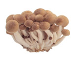

แครอทคุณภาพดีจะมีขนาดประมาณ 7-9 นิ้ว
มีสีส้มสดสม่ำเสมอ เป็นแท่งตรง ผิวเรียบ
ไม่มีแขนตะปุ่มตะป่ำงอกออกมา
ต้องเลือกเปลือกสีเขียวอ่อน ภายในเมล็ดเต่งตึง
เรียงเต็มแถว ไม่มีช่องโหว่ ไม่มีกลิ่นเหม็นเปรี้ยว
เมื่อใช้เล็บจิกเมล็ดบริเวณปลายฝักจะมีน้ำแป้ง
ไหลออกมา

เห็ดแยกย่อยออกเป็นหลายชนิด แต่ก็มีลักษณะ
บางอย่างร่วมกัน หลัก ๆ แล้ว ควรเลือกเห็ดที่มี
ดอกสมบูรณ์ ไม่มีรูเว้าแหว่ง ไม่มีรอยช้ำ
หากสีคล้ำกว่าปกติจะเป็นเห็ดแก่
ไม่ว่าหอมใหญ่ หรือหอมแดง ให้เลือกที่หัวเต่งๆ
ผิวหรือเปลือกแห้ง เปลือกบาง ไม่ฝ่อ ไม่ลีบ
ไม่มีรอยบุบหรือเน่า ไม่มีจุดราสีดำๆ เวลาเก็บ
ให้เก็บในที่ที่อากาศแห้ง ถ่ายเทสะดวก
มะเขือเทศ มีหลายสายพันธ์ แต่หลักๆ ถ้าต้องการ
ให้เก็บได้นานหน่อย ให้เลือกที่ผิวเต่งตึง ไม่เหี่ยว
หรือช้ำ เนื้อยังแข็งๆหน่อย สีผิวแดงสด หรือถ้าเป็น
สีเขียว เหลือง หรือส้ม ก็อาจจะเก็บได้นานขึ้นอีก
ควรเลือกซื้อแตงกวาที่มีผิวเรียบ ถ้าผิวเหี่ยว
มีริ้วรอย อาจเป็นแตงที่เก็บไว้นาน ไม่สดใหม่
และต้องเลือกลูกที่กลมกลึงสม่ำเสมอกัน
หน่อไม้ฝรั่งที่กรอบอร่อยนั้น จะมีสีเขียวเข้ม
ตลอดก้าน ทอาจเหลือบม่วงที่ส่วนปลาย
นิดหน่อย ต้องเลือกก้านที่เหยียดตรง
หากก้านบิดงอจะเหนียว
เคล็ดลับการเลือกมะเขือยาวนั้นไม่ยากเลย
เพียงแค่เลือกมะเขือยาวลูกที่มีขั้วติดแน่น ผิวตึง
เป็นมันวาว หากผิวด้านกระด้างจะไม่ค่อยสด
แก่เกินไป มีเนื้อเละแลขม